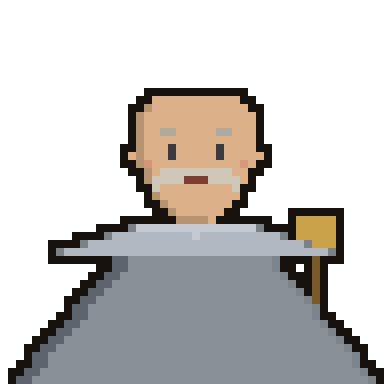

DYMITR SZUJSKI
Wódz wojsk Moskwy i najemników · Lv.27
HP
1610 / 1610
STANISŁAW ŻÓŁKIEWSKI
Hetman koronny · dowódca husarii · Lv.32
HP
1610 / 1610
Świt 4 lipca 1610 pod Kłuszynem. Garstka husarii staje naprzeciw ogromnej armii Moskwy i obcych najemników. Jak uderzy hetman Żółkiewski?
ZWYCIĘSTWO!
Husaria Żółkiewskiego rozbija wielokrotnie liczniejszą armię Moskwy. Triumf pod Kłuszynem, 4 lipca 1610.